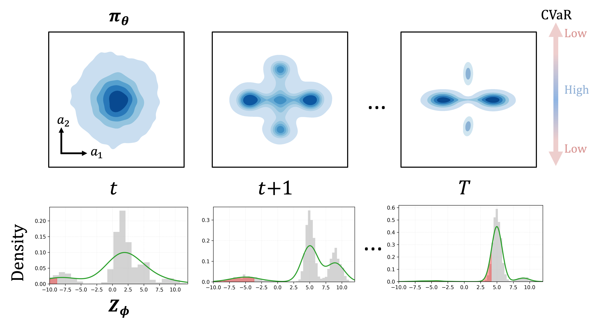

Abstract
Offline RL in safety-critical settings must deliver high returns and avoid catastrophic tail outcomes — yet existing risk-aware methods trade away policy expressiveness to achieve safety, while expressive diffusion and flow policies operate only in risk-neutral settings. RAMAC closes this gap by pairing a generative actor with a distributional critic and training jointly on a BC + CVaR objective: the BC term keeps actions on the data manifold, and the CVaR term shifts probability mass away from low-quantile outcomes. We prove that BC regularization directly bounds out-of-distribution action probability — making it a principled, risk-agnostic safety mechanism — and validate this on Stochastic-D4RL, where RAMAC achieves consistent CVaR0.1 gains across six tasks while maintaining strong mean returns.
The Gap
Diffusion and flow policies are the most expressive tools in offline RL — but they optimize mean return only, leaving catastrophic lower-tail outcomes entirely unaddressed. Risk-aware methods like ORAAC and CODAC handle tail risk, but only by constraining the policy class in ways that prevent capturing multimodal action distributions. No prior work achieves risk-awareness, OOD control, and expressiveness simultaneously.
| Method | Risk-Awareness | OOD Control | Expressiveness |
|---|---|---|---|
| Expressive Risk-Neutral DiffusionQL, FlowQL | ✗ / ✓ | ||
| Risk-Aware Restricted ORAAC, CODAC | |||
| RAMAC (Ours) |
Comparison of offline RL paradigms on three desiderata. RAMAC is the only approach achieving all three simultaneously.
Our Approach
RAMAC operates in two stages. A distributional critic (IQN) learns the full conditional return distribution, giving access to calibrated lower-tail quantiles. A generative actor — instantiated as a diffusion policy (RADAC) — is trained jointly on two objectives: a BC term that keeps actions on the data manifold, and a CVaR term that shifts probability mass away from low-quantile outcomes.

Eq. 12. The BC term keeps actions on the data manifold and directly bounds OOD probability (Proposition 1). The CVaR term shifts mass away from the worst-α return outcomes.
Theoretical Insight
Why It Works
Prior-anchored perturbation methods like ORAAC cannot fully eliminate out-of-distribution actions: on thin or nonconvex supports, the anchor ball inevitably overlaps the out-of-support region, leaving a strictly positive OOD probability no matter how the residual policy is trained. RAMAC instead applies BC regularization directly to the deployed generative policy — and we prove this yields a hard upper bound on per-state OOD probability.
OOD Probability Bound
For each state s, the per-state OOD probability δs(πθ) satisfies:
Shrinking the forward-KL via BC directly suppresses per-state OOD probability — with the strength of the effect controlled by η in Eq. 12.
Experiments
We evaluate RADAC on Stochastic-D4RL — six standard D4RL locomotion datasets augmented with rare heavy-tailed penalties across HalfCheetah, Hopper, and Walker2d. Results are averaged over 5 seeds and 50 evaluation rollouts; we report both mean return and episodic CVaR0.1.
2-D Risky Bandit
A 2-D contextual bandit isolates exactly what makes risk-aware offline RL hard: the ground truth has a safe center mode (moderate reward, no catastrophic tail) and a risky ring (higher mean with rare large penalties). This controlled geometry makes multimodality and lower-tail hazard visible — and reveals where each method's policy mass actually concentrates.
Top: Ground truth consists of a safe center mode (yellow-green) and a risky ring where high-reward samples (yellow) are interspersed with catastrophic penalties (purple). Risk-neutral generative baselines concentrate on the risky ring or collapse topology. Prior-anchored perturbation methods produce samples in the low-density inter-mode region, exhibiting OOD leakage. RADAC concentrates near the safe center without losing multimodality.
Stochastic-D4RL Benchmark
| Dataset | Metric | CQL | CODAC | ORAAC | FlowQL | DiffusionQL | RADAC |
|---|---|---|---|---|---|---|---|
| HalfCheetah-ME | Mean | −66.66 | −0.12 | 796.06 | 844.14 | −20.71 | 916.64 |
| CVaR | −135.39 | −0.11 | 742.94 | 754.44 | −76.39 | 805.25 | |
| Walker2d-ME | Mean | −21.52 | 23.96 | 969.62 | 1309.48 | −32.38 | 1708.68 |
| CVaR | −64.88 | −43.88 | 358.55 | 468.15 | −116.19 | 573.22 | |
| Hopper-ME | Mean | −25.87 | 26.59 | 714.15 | 341.16 | −279.97 | 130.74 |
| CVaR | −111.37 | −150.92 | 374.63 | −8.80 | −872.95 | −167.29 | |
| HalfCheetah-MR | Mean | −66.21 | −0.11 | 18.99 | 434.33 | 279.95 | 525.84 |
| CVaR | −127.09 | −1.47 | −34.09 | 224.73 | 79.93 | 278.65 | |
| Walker2d-MR | Mean | −16.90 | 33.59 | 126.94 | 411.36 | 96.88 | 615.94 |
| CVaR | −51.49 | −52.63 | −203.64 | 5.08 | 48.14 | 145.21 | |
| Hopper-MR | Mean | −16.25 | −47.83 | −18.00 | 373.16 | −2.79 | 385.58 |
| CVaR | −118.70 | −160.08 | −129.25 | −62.24 | −51.33 | −8.16 |
Table 1. Stochastic-D4RL results over 5 seeds. Best per row bold; second-best shaded. RADAC achieves consistently stronger tail returns (CVaR0.1) across most tasks.
Full results with standard errors appear in Appendix E.2 of the paper.
OOD Action Rate
RADAC achieves consistently lower out-of-distribution action rates than ORAAC across all tasks, validating that BC regularization on the deployed policy directly suppresses OOD visitation.
| Task | RADAC (ours) | ORAAC |
|---|---|---|
| HalfCheetah | 2.04 ± 0.80 | 6.15 ± 1.5 |
| Walker2d | 0.75 ± 0.54 | 10.84 ± 1.98 |
| Hopper | 0.77 ± 0.56 | 2.68 ± 1.01 |
Table 2. OOD action rate (% ± s.e.) on Medium-Expert (κ=3). RADAC is consistently lower, confirming that BC regularization on the deployed policy suppresses OOD visitation.
Citation
@article{fukazawa2025ramac,
title = {RAMAC: Multimodal Risk-Aware Offline Reinforcement Learning
and the Role of Behavior Regularization},
author = {Fukazawa, Kai and Mundada, Kunal and Soltani, Iman},
journal = {arXiv preprint arXiv:2510.02695},
year = {2025}
}